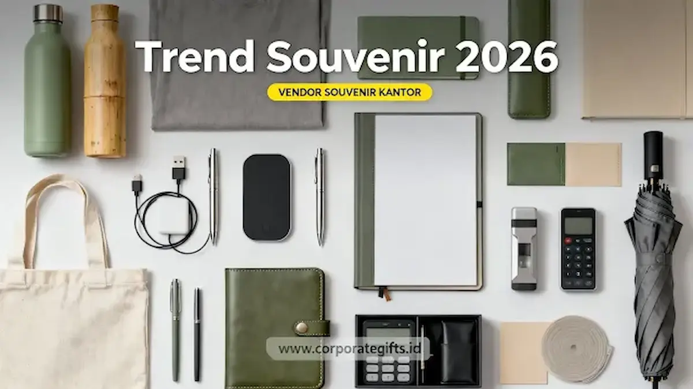

Corporate Gifts ID - Souvenir 2026 adalah merchandise korporat yang mengutamakan nilai utilitas nyata, estetika minimalis modern, dan material ramah lingkungan (sustainable materials) guna memperkuat brand recall perusahaan di era digital. Tren cinderamata perusahaan kini mengalami transformasi menyeluruh; jika tahun-tahun sebelumnya suvenir hanya dianggap sebagai pelengkap seremonial belaka, kini perusahaan berlomba-lomba memilih merchandise yang mampu menyampaikan nilai identitas brand secara mendalam dan berkelas.
Bagi organisasi yang berorientasi pada reputasi, retensi klien B2B, dan kepuasan karyawan, pemilihan merchandise perusahaan telah menjadi instrumen komunikasi visual yang sangat strategis. Artikel ini mengupas tuntas analisis tren, kategori terpopuler, hingga panduan praktis memilih suvenir terbaik untuk agenda korporat Anda di tahun 2026.
Poin Kunci Trend Souvenir Korporat 2026:
- Pergeseran Nilai: Mengutamakan fungsi harian nyata dan daya tahan minimal 1-2 tahun daripada cinderamata sekali pakai.
- Dominasi Smart Tech: Produk gadget seperti smart tumbler sensor suhu, wireless charger pad, dan powerbank fast charging PD 20W menjadi primadona.
- Prinsip Keberlanjutan (ESG): Penggunaan material kayu olahan, bambu alami, stainless steel SUS304 daur ulang, dan kemasan bebas plastik.
- Estetika Minimalis: Mengadopsi warna monokrom netral (hitam matte, sage green, navy) dengan sentuhan subtle branding deboss atau grafir laser.
- Personalisasi Eksklusif: Penerapan grafir nama personal penerima pada set gift box untuk menciptakan kesan kedekatan emosional.
Mengapa Tren Souvenir Korporat 2026 Berubah Signifikan?
Memasuki lanskap bisnis 2026, terdapat tiga faktor pendorong utama yang mengubah preferensi perusahaan dalam memilih merchandise promosi:
1. Era Personal Branding & Corporate Identity Terpadu
Perusahaan semakin menyadari bahwa setiap barang yang membawa logo mereka adalah representasi langsung dari kredibilitas institusi. Memberikan souvenir berkualitas buruk atau mudah rusak justru berisiko menurunkan reputasi brand. Oleh karena itu, souvenir harus mampu mencerminkan nilai profesionalisme, memberikan pengalaman unboxing yang berkesan, serta membangun rasa percaya (trust) yang kokoh.
2. Pergeseran Gaya Hidup Pekerja Gen Z dan Milenial
Generasi pekerja saat ini didominasi oleh kelompok usia produktif yang sangat kritis terhadap aspek keberlanjutan lingkungan, fungsionalitas barang, dan estetika visual. Mereka lebih menghargai cinderamata yang instagrammable dan bermanfaat untuk menunjang aktivitas kerja hybrid, seperti tumbler vacuum insulated atau tote bag kanvas tebal.
3. Ledakan Event Korporat Offline dan Brand Activation
Aktivitas tatap muka pasca-transformasi digital semakin meningkat pesat, mulai dari seminar nasional, konferensi B2B, peluncuran produk, hingga agenda employee gathering. Di tengah banyaknya acara sejenis, merchandise yang unik dan berkelas menjadi pembeda utama agar event perusahaan Anda selalu diingat oleh peserta.

Inspirasi merchandise ramah lingkungan dan gadget teknologi pintar untuk gift set korporat.
Karakteristik Utama Souvenir 2026 yang Paling Dicari Perusahaan
Berdasarkan riset kebutuhan procurement korporat di Indonesia, souvenir ideal di tahun 2026 wajib memenuhi kriteria berikut:
- Fungsional & Tahan Lama: Memiliki masa guna aktif minimal 1 hingga 2 tahun sehingga paparan promosi (brand exposure) berlangsung terus-menerus tanpa henti.
- Estetika Minimalis & Elegan: Mengedepankan garis rancang modern, warna-warna bumi (earth tones), serta finishing doff/matte yang disukai kalangan eksekutif.
- Kustomisasi Presisi: Didukung teknologi cetak mutakhir seperti grafir laser fiber, print UV flatbed, serta deboss foil emas/perak yang rapi dan tidak mudah terkelupas.
- Komitmen Eco-Friendly: Mengurangi kemasan plastik sekali pakai dan beralih ke kotak kardus daur ulang, reusable pouch, atau hardbox bermaterial ramah lingkungan.
- Nilai Tambah Digital (Smart Value): Memadukan teknologi pintar seperti integrasi QR Code dinamis ke katalog digital atau sensor pintar pada botol minum.
Tabel Matriks Kategori Souvenir 2026 dan Rekomendasi Penggunaan Event
Berikut rangkuman matriks kategori souvenir 2026 beserta target penerima dan momentum acara yang paling sesuai:
| Kategori Souvenir | Contoh Produk Unggulan | Target Audiens Utama | Rekomendasi Momen Event |
|---|---|---|---|
| Smart Tech Gifts | Smart tumbler LED, wireless charging pad 15W, powerbank 20.000mAh | Eksekutif, staf profesional, klien B2B teknologi | Konferensi industri, RUPS, apresiasi kemitraan |
| Eco-Friendly Series | Tumbler bambu SUS304, notebook daur ulang, cutlery set kayu | Peserta seminar, instansi pemerintah, komunitas peduli lingkungan | Seminar keberlanjutan (ESG), CSR, workshop edukasi |
| Executive Stationery | Agenda kulit PU deboss logo, pulpen metal rollerball grafir nama | Manajemen direksi, pejabat instansi, tamu VIP | Serah terima jabatan, penandatanganan MoU, onboarding direksi |
| Lifestyle & Wellness | Sport bottle stainless, travel kit pouch, diffuser aromaterapi meja | Seluruh karyawan, peserta outing, member komunitas | Employee gathering, hari ulang tahun kantor, family day |
| Custom Apparel | Kaos katun combed premium, polo shirt bordir komputer, hoodie custom | Karyawan internal, peserta brand activation, relawan acara | Kickoff meeting, expo pameran dagang, seragam event lapangan |
5 Kategori Souvenir 2026 yang Paling Populer & Favorit
Bagi panitia pengadaan yang sedang merancang anggaran merchandise, berikut lima kategori produk yang terbukti menjadi favorit korporasi:
1. Souvenir Teknologi Premium (Smart Tech Gifts)
Kategori gadget pintar memuncaki daftar pesanan korporat karena sangat mendukung produktivitas kerja era hybrid. Pilihan unggulan mencakup:
- Smart Tumbler Digital LED yang menampilkan indikator suhu air secara presisi pada tutup botol.
- Wireless fast charging pad 15W berlapis kulit sintetis mewah untuk meja kerja eksekutif.
- Powerbank fast charging 10.000 - 20.000 mAh berstandar PD/QC 3.0 dengan cetak print UV logo tahan gores.
- Flashdisk kartu OTG dual-metal kecepatan tinggi (USB 3.0 & Type-C) untuk seminar kit digital.
2. Eco-Friendly & Sustainable Merchandise
Program keberlanjutan korporasi (CSR dan ESG) mendorong permintaan cinderamata ramah lingkungan. Produk berbahan dasar serat bambu alami, botol insulasi stainless food-grade SUS304, serta buku catatan dari kertas daur ulang bersertifikasi FSC memberikan pesan kepedulian lingkungan yang kuat kepada penerima.
3. Perlengkapan Kantor Modern & Executive Stationery
Merchandise kantor tetap menjadi pilihan klasik yang aman dan berwibawa. Pilihan populer meliputi notebook agenda kulit custom, pulpen metal rollerball eksklusif, dan kalender meja spiral custom yang menemani aktivitas kerja harian sepanjang tahun.
4. Lifestyle & Wellness Corporate Gifts
Gaya hidup sehat dan kepedulian terhadap kesehatan mental karyawan meningkatkan minat terhadap cinderamata bertema wellness. Tas travel pouch tahan air, botol minum olahraga berkapasitas besar, handuk olahraga microfiber, serta humidifier aromatik meja kantor menjadi opsi menarik untuk acara gathering internal perusahaan.
5. Custom Apparel & Fashion Item Kasual
Pakaian kasual korporat memiliki nilai keterikatan visual yang tinggi. Kaos polo katun pique bordir komputer, jaket bomber windbreaker, dan topi baseball custom memberikan rasa kekompakan tim sekaligus media promosi bergerak saat digunakan di luar kantor.
Panduan 4 Langkah Memilih Souvenir 2026 yang Tepat
Agar alokasi anggaran merchandise perusahaan Anda memberikan dampak optimal, ikuti panduan sistematis berikut:
- Petakan Karakteristik dan Profil Audiens: Sesuaikan pilihan barang dengan demografi peserta (usia, jabatan, preferensi profesi). Karyawan milenial cenderung menyukai gadget dan eco-goods, sedangkan tamu VIP membutuhkan kemasan presentasi hardbox mewah.
- Sesuaikan Tema dan Format Acara: Pilih paket seminar kit fungsional untuk agenda edukatif, atau hampers gift set eksklusif untuk seremoni tahunan dan apresiasi akhir tahun.
- Terapkan Struktur Budgeting Bertingkat (Tiering Budget): Bagi alokasi anggaran menjadi tiga tingkat (Ekonomis untuk massal, Medium untuk peserta khusus, dan Premium untuk VIP) guna memaksimalkan efisiensi dana.
- Bermitra dengan Vendor B2B Berpengalaman: Pastikan vendor penyedia memiliki legalitas resmi, portofolio nyata, ketersediaan sampel fisik/mockup digital gratis, serta jaminan ketepatan waktu pengiriman.
Pentingnya Investasi Souvenir Berkualitas untuk ROI Branding
Souvenir korporat yang dirancang dengan cermat bertindak sebagai tenaga pemasar pasif yang bekerja secara berkelanjutan. Ketika cinderamata Anda digunakan berulang kali di ruang kerja atau ruang publik, ingatan terhadap merek (brand recall) akan terbentuk secara organik tanpa biaya iklan berulang. Inilah yang menjadikan corporate gifting sebagai salah satu strategi pemasaran dengan imbal hasil investasi (Return on Investment) tertinggi di ranah B2B.
Kesimpulan dan Konsultasi Pengadaan Souvenir 2026
Menghadapi era bisnis 2026, standar cinderamata korporat telah bertransformasi menuju produk yang fungsional, estetik, berteknologi pintar, dan ramah lingkungan. Menentukan souvenir yang selaras dengan identitas brand akan memposisikan perusahaan Anda sebagai institusi yang modern, profesional, dan berorientasi masa depan.
Percayakan pengadaan souvenir kantor 2026 dan merchandise promosi instansi Anda bersama CorporateGifts.ID. Kami siap mendampingi proses pengadaan dari kurasi produk, visual mockup 3D gratis, hingga distribusi logistik aman ke seluruh Indonesia. Eksplorasi koleksi lengkap melalui katalog resmi 2026 atau ajukan permintaan penawaran harga (RFQ) hari ini juga.